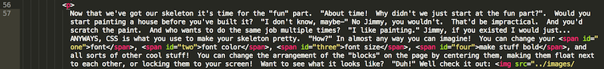
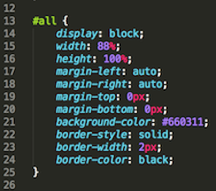
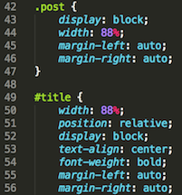

IMG
Classes and Data Structures
Week 5: 4/17/15
"Hey Josh, I've got another problem" Why am I not surprised? "Shut up. Like, I get making methods and stuff, but sometimes I feel like I'm just making a bunch of unrelated things. I want to make stuff that works together!" I think what you're talking about is Classes. "I've already taken enough classes-" No, you- CLASSES. A class is an object that lets you store and use data structures like hashes, arrays, and methods all in a centralized location. "Yes! That's what I want!" Well, Jimmy. I'm going to take you to class. 8). "You are by far the lamest-"
Classes are awesome. Say we wanted to create a person- "Whoa, okay, let's not start playing god here" Just shut up and watch. Lets create a Person class. First off, classes always start with a capital letter:
class Person
end
"Okay, that was by far the most anticlimactic thing I've ever seen". I'm not done! Lets start it up so that it takes a couple of arguments upon initilization. "Initialization?" Like when you create the class or start it up. "Oh".
class Person
def initialize (name, age, job)
@name = name
@age = age
@job = job
end
end
"What the heck is with all those @ symbols?" Those symbols mean that those variables are global within the scope of the class. "?". It means that other methods can use those variables. Check it out:
class Person
def initialize (name, age, job)
@name = name
@age = age
@job = job
end
def display
puts "My name is #{@name}, I am #{@age} years old, and I am a #{@job}!"
end
end
"Oh okay, so without all the @ symbols, display wouldn't be able to get all the initialized variables?" You got it Jimbo. "So how do I use it?" Hmmmm. Let's create a new person like this:
jimmy = Person.new("Jimmy", 1000000000, "collosal d-bag")
"Whoa, I don't like where this is going -______-" Lol just watch. If I call the display method on jimmy:
jimmy.display => My name is Jimmy, I am 1000000000 years old, and I am a collosal d-bag!
"Dude, seriously?" Hahaha oh man, that's hilarious. "What the heck. Do I have to make a whole new jimmy to put in the correct stuff?" Actually no, there's a way to read and write variables to a class as well! "Well get on with it!". There's three ways to do it: attr_reader, attr_writer, and attr_accessor. reader only lets you read the variables, writer lets you write them but not read them and accessor lets you do both. Lets add a reader for name, a writer for age, and an accessor for job.
class Person
attr_reader :name
attr_writer :age
attr_accessor: job
def initialize (name, age, job)
@name = name
@age = age
@job = job
end
def display
puts "My name is #{@name}, I am #{@age} years old, and I am a #{@job}!"
end
end
jimmy.display
My name is Jimmy, I am 1000000000 years old, and I am a collosal d-bag!
Haha, still hilarious. Here's they work:
jimmy.name => "Jimmy"
jimmy.age => no method error
jimmy.job => "collosal d-bag"
"Why is .age returning a no method error?" Because attr_writer only lets you read, not write. "Oh, got it." So to change them you'd do this:
jimmy.name = "Josh"
jimmy.age = 24
jimmy.job = "figment of your imagination"
jimmy.name = "Jimmy" #it ignores "Josh" as you'd expect
jimmy.age => 24
jimmy.job => "figment of your imagination"
jimmy.display => My name is Jimmy, I am 24 years old, and I am a figment of your imagination!
"That's much better :)" Well I'm glad I could help :P.
Anyways, there's a ton of different applications for stuff like classes! Say you want to create an address book. Instead of keeping track of a bunch of rogue variables and methods, you could create an address class that stores all of that information once! It's really handy. "You mom is handy." Inappropriate, Jimmy. But yeah, that's about all I've got for today- "JIMMY SIGNING OUT!! WAKAWAKAWAKA!!" -______-.
IMG
Enumerables and the Wonderful World of #map
Week 4: 4/10/15
"I'm the map, I'm the map, I'm the map, I'm the map..." Jimmy. "I'M THE MAP, I'M THE MAP, I'M THE MAP, I'M THE MAP-" JIMMY! "...I'm the map!". I swear to god, Jimmy. "What? I thought we were going to talk about maps?" Not literal maps! The Ruby enumerable, #map! "...You already lost me." Well sit back, shut your food-hole, and get ready to be learned!
Have you ever completed an entire array, only to realize you screwed it up? "Oh, almost every time." Of course you have. Going through the array, element by element can take foreverrr "Tell me about it :\" so programmers, being the endearingly lazy bastards they are, created something called enumerables. Enumberables are methods that can be called once, but iterate over each element in your array. "Iterates?" Looks at, goes over, etc. "Ohhh. That's cool. What do they do?" Well, it depends on what method you call! There are lots of different types of Enumerables - for instance, #select uses a block of code to select which elements of the array you want, and returns just those elements, and #sort puts all of your elements in order from least to greatest! Cool huh? "That is amazing. So what is #map?"
#map is an enumerable that lets you modify each element in your array. "What do you mean?" Say you made an array of the numbers 1-100 and then your boss comes in and says 'Oh, sorry, I meant 101-200'. "Dude, every time!!" I know! "Well, I better get to work...that's gonna be a lot of 1's and 0's to add..." But wait! That's what #map is for! "Huh?" say your code is array = [1, 2, 3, 4,...100]. If you enter array.map {|number| number + 100} it will return an array of [101, 102, 103, 104,...200] "Say whaaaaa!" Totally! #map isn't destructible though, meaning that the original array will stay unchanged. To save the results, you have to save it into new variable like this: newarray = array.map {|number| number + 100}. Then you can call newarray and bam - 101-200! "That's cool but that's kind of a hassle :\...What if I just want to change the original array?" I thought you'd never ask. "You know me all too well." Of course I do. To permantly change the original array, call #map! instead. "So if I wanted to, say, double every element in the array it would look like this? array.map! {|number| number * 2 }" Wow, that's...actually right o_O "Sometimes, I think that you think that I'm an idiot, Josh >:O" Hahhh whaaaaat.......
So yeah, there you go. Enumerables and #maps. Lots of fun. "Yeah, fun for you, nerd." What? You don't think that was- "Nerd." ...Just because I enjoy this doesn't mean- "NERD!". One day Jimmy. One day...
IMG
Arrays vs Hashes
Week 3: 4/3/15
"UGH." What's the problem, Jimmy? "Variables are great and all but I'm so sick of typing in all my scores like score1 = 24, score2 = 36, score3 = 49. It's taking forever! And I keep losing track of everything!" What? Don't you know about arrays? "About what?" Arrays! "...?" Are you serious? You've been going all this time without using Arrays and Hashes? "...Yeah, so?" Oh my god that's hilarious! Jimmy, dude, you gotta start paying attention. "Don't patronize me Josh, I'm not an idiot or anything." Of course you're not, Jimmy. I'm sure there's a tonnn of people out there that don't know about arrays or hashes......Allow me to blow your mind, Jimmy: "(uhh phrasing?)"
Arrays let you store lots of different types of information all in one place, kind of like a variable! "Great. How?" Arrays use bracket notation [] and work like this: Say, you wanted to create an array of your scores to keep them all in one place. To do that, create scores like a normal variable, but instead making it equal just one element, you can add a bunch of elements within brackets like this: scores = [24, 36, 49]. "Whaaaat that's awesome!" Of course it is other Barry. Jimmy. Whatever. "Ok so now that it's in the array, how do I get it out?" Well each thing you enter in an array is given an index starting at zero. So for instance if you typed in scores[0] it will return 24, the first element in the array. If you typed in scores[1] you'd get 36. "Ohhh! Can I add stuff to an array? Like if I got another score?" Of course! You'd type in scores[3] = 84 and it'll automatically assign 84 to the third index! "Wow that's awesome but that's also kind of confusing. What if I have a bunch of scores? How do I keep everything organized? Like if I have my math scores, my english scores, and my science scores?" Unfortunately, Arrays aren't specific like that. "Sad times." Buttt there is something else that IS specific like that!
Enter HASHES stage left! Hashes use braces {} instead of brackets [] and have this cool system of keys and value pairs. So if for instance, you wanted to make a scores hash it could look something like this:
scores = {
math: 24,
english: 36,
science: 49
}
See how each score now corresponds with a label? In this case math, english, and science are the keys and the numbers are the value pairs. "That's way easier to understand and keep track of!" Oh yes. Hashes are great because they're easy to identify and access! To access this sort of storing mechanism, typing in scores.math will return 24 and scores.english will return 36! There's all sorts of ways to use hashes too! Say you wanted to create an address book. You could create a hash called address = {name: x, street: x, city: x, state: x, zip: x}. You could even create an array of hashes like address_book = [ {}, {}, {}, {}] and have each one filled with an address! How sweet is that?!
So there you go! "This is amazing! I'm going to save so much time! No more searching through lines and lines and lines of variables!" Not anymore Jimmy. Not anymore. So now you know the basics of array and hash information storing and information so get out there and be awesome and keep your junk in order! Yaaay! JOSH AND JIMMY - OUT!
IMG
HTML vs CSS
Week 2: 3/28/15
So you want to make a website? "How did you know?" I have ESP, Jimmy. "Are you a wizard?" Yes. And now I'm going to teach you the wizardry of website building. Simple websites are created using two coding languages - HTML (Hypertext Markup Language) and CSS (Cascading Style Sheets). " D:?! " Don't freak out - as scary as the names are, their purposes are pretty straightforward. The easiest way to describe the difference between the two is that HTML is the skeleton of your site and CSS is the flesh and skin and pretty bits.
Just like any essay or project you'll want to start by building the skeleton of your site - in this case the HTML. HTML uses a cool system of tags (commands within < and >) and nested objects. "Ok - what?? You've already lost me. :(" Don't panic Jimmy, it's pretty simple. Here's a picture of it: 
See that? That's our skeleton. So check it out - we start with a <div> tag (think of it as a block with stuff inside it). This div is part of a group of divs called "post" (this will make more sense when we check out CSS in a minute). "What the hell are all those other crazy letters?" That's just regular english Jimmy. "No, the stuff in the <>s!" Those are all tags - each one has a different purpose on your site. The <h> stands for "header" and <p> stands for "paragraph". Pretty simple huh? Every tag also has an ending tag, indicating where that object ends. You see those vertical lines on the left hand side? If you trace the line down, you'll notice that the <div> tag, marking the beginning of our "post" block, has a matching </div> tag below, indicating the end. "Oh ok, so it makes, like, a container?" You got it, Jimmy. Now, you see how everything between those tags is tabbed in towards the right? That is what I meant by nesting - the tabs indicate that the object is INSIDE the above object and can inherent certain properties- "zzzzz" Yeah yeah, too much info. Maybe I'll tell you more about that in another post. Anyways, this tabbing system is awesome. It makes it much easier to visualize the relationship between your various objects and keep track of your website's skeleton! Let's see what it looks like in the browser:  "Are you serious? But that's so booooorrrrriiiinggg." Yeah well we're not done- "I mean look at that! What an ugly mess!" Jimmy, were you not listening? What part of "skeleton" are you not understanding? "Obviously the core concept!" [Insert facepalm]. Ok, well now that we have a skeleton we need to flesh it out. "How are we supposed to do-" CSS. CSS, Jimmy. It's seriously like right up there ^. Get on my level!
"Are you serious? But that's so booooorrrrriiiinggg." Yeah well we're not done- "I mean look at that! What an ugly mess!" Jimmy, were you not listening? What part of "skeleton" are you not understanding? "Obviously the core concept!" [Insert facepalm]. Ok, well now that we have a skeleton we need to flesh it out. "How are we supposed to do-" CSS. CSS, Jimmy. It's seriously like right up there ^. Get on my level!
Now that we've got our skeleton it's time for the "fun" part. "About time! Why didn't we just start at the fun part?". Would you start painting a house before you've built it? "I don't know, maybe-" No Jimmy, you wouldn't. That'd be impractical. And you'd scratch the paint. And who wants to do the same job multiple times? "I like painting." Jimmy, if you existed I would just...ANYWAYS, CSS is what you use to make your skeleton pretty. "How?" In almost any way you can imagine! You can change your font, font color, font size, make stuff bold, and all sorts of other cool stuff! You can change the arrangement of the "blocks" on the page by centering them, making them float next to each other, or locking them to your screen! Want to see what it looks like? "Duh!" Well check it out:   
Lots of stuff going behind the scenes, huh? See how every HTML <span> is given an ID? Well that ID corresponds to a section in the CSS that tells it what to do! "That's..." Yes, Jimmy? "...actually kind of awesome! :O!" Duh! It's also great because by keeping your skeleton and pretty stuff separate, it's a lot easier to pinpoint exactly where your problem is when one arises! "But with a system so simple, how many problems can you really have?" Hahaaa, oh Jimmy. Thank you. That was a good laugh. "Huh?" You'll see one day, buddy. You'll see.
Anyways, so that's that! You start by creating a skeleton in HTML and then make it the belle of the ball in CSS. "Just like Carrie!" Hopefully not at all Carrie. It'll probably feel a bit like Carrie for a while though, now that I think about it. ":D!" But no matter how hard it gets, nothing is more satisfying than getting your stuff to work! There's a ton of cool resources out there like Codecademy, w3schools, and skillcrush that have tips and tricks and a lot more info, so if you get lost or completely and utterly demoralized, there's probably a solution out there just waiting to be found! Good luck out there! Josh and Jimmy signing off.
IMG
Git, GitHub, and Version Control
Week 1: 3/20/15
Alright, so here we go. Week 1 has been a whirlwind - lots of stuff to talk about. Since I doubt anyone's going to read this, I'm going to teach this to my imaginary friend(?) Jimmy. Hey Jimmy, how are you doing? "I'm doing pretty well, been kind of a crazy day. I went to Pottery Barn earlier-" Okay - Jimmy? "Yeah?" Let's just stay focused on the coding stuff for now, okay? "Oh yeah - Got it. 10-4. Loud and clear. I can totally do that." Just...okay, I'm just going to start talking now.
What are the benefits of version control? Great question, Jimmy. "Huh?". Version control is a tool that lets you record your project progress at any given point. And it's awesome. Why is it so awesome? Errors and mistakes in your code/methodology are like viruses. Sometimes you don't know that you're sick (or that your project is flawed) until it's irreparable. "Impossible - I've purified my body in the waters of Lake Minnetonka-" Well not everyone's perfect like you, Jimmy. Version control lets you figure out the exact moment that the virus/error entered your system and allows you to continue from that moment as though you were never sick in the first place. Pretty cool huh? Another way to think of it is as a "save station". "Like a video game?!" No Jimmy, not like...well yes. Kind of exactly like that. It lets you save your progress before you make a big decision, explore multiple paths, and decide which path yields the best results. It's like your very own mobile multiverse! Very cool!
"That is cool." Of course it is Jimmy. "But there's no such thing as a real life save station...is there?!" Oh Jimmy. So naiive. For programmers, there is a wonderful tool just like that. It's called Git! How does Git help you keep track of changes? Git has a ton of cool features to help you organize your project. Git is in a constant state of comparing your work to the master branch. In a way, when you work in Git, you're working in an alternate reality. You can do anything you'd like and Git will keep track off everything you do and all of the changes you make. "Hey, just like Sting! It'll be watching you!" Hopefully not in a questionably weird way, Jimmy. Anyway, when you've made all of your changes/additions, Git lets you approve/package them and then commit the changes to the project. It then updates the master branch and voila! You've got a stew going!
"So that's all cool and stuff...but that sounds so lonley! :(! What if I want you, my best friend, to give me your world-renouned feedback on my code? Is there a way for me to show my brilliant creations..." Heh "...to other people?" Jimmy, just when I thought you couldn't get any dumber, you go and say that...and totally redeem yourself! There is a place exactly like that! It's called Github! GitHub adds a whole new awesome layer to the collaboration process. You remember Version Control and Git and keeping track of changes? Well GitHub makes it all accessable virtually! "Whaaaat? You don't have to sit next to each other or physically connect your computers or-" No! Not any more! GitHub is essentially a hosting service that allows you to upload your code to a centralized server. Your master branch can live in the free unbridled pastures of GitHub while you (and many many others!) can access it, change it, comment on it, collaborate through it, do whatever you want to it - virtually! How freakin' awesome is that?! Just imagine how many whiny programmers it shushed up. Hah. Good times.
Anyways, this has been your Week 1 update with Josh! "and Jimmy!". Just- Josh...okay. Hope you guys learned something! I'll probably be back next week, so stay tuned! "What time?" I'll let you know. "So like...friday?" I mean, hopefully. "Any way you can give me like a guestimation or-" NO JIMMY, I DON'T KNOW! "Well jeez, I didn't mean to..." Ha. Oh, Jimmy. This is going to be...fun.